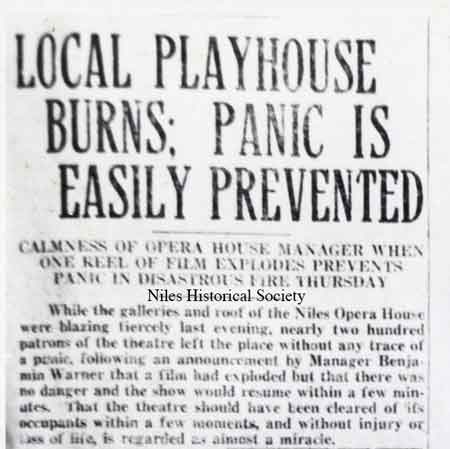
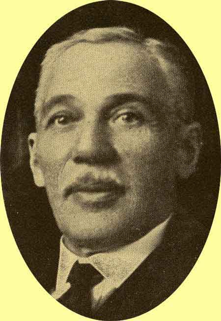
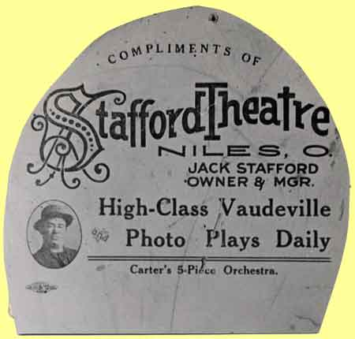

Ward-Thomas Museum


The Warner Brothers Niles Connection
Ward — Thomas
Museum
Home of the Niles Historical Society
503 Brown Street Niles, Ohio 44446
Click here to become a Niles Historical Society Member or to renew your membership
Click on any photograph to view a larger image, click on image again to zoom into photograph.
The
Warner Brothers.
Where did the Warner Brothers get started in the movie business? New Castle, Pennsylvania may well have the honor of having the first Warner Theater built in 1907, but the Warner brothers began their show business in Niles, Ohio. Harry Warner’s father, Benjamin Warner, was a shoemaker, so it was natural for the oldest son to follow in that trade. According to the program listed below, Harry was 15 and working in the shoe shop and was a familiar figure to all who passed by his window on State Street, which was located exactly opposite the site where the Warner Theatre now stands. Harry was born in 1881, making the year 1896, when they started in the movie business. Again the program mentions the start of the family in Niles. “Many residents of Niles will also remember the first exhibition of the motion pictures in this city given by Mr. Albert Warner, a crude affair perhaps when contrasted with the handsome edifice which now becomes the shrine of the silent art in this community, but as the art has developed so have its pioneers progressed with it and the Warner Theatre with its initial program stands as an eloquent example of the fact”. |
|
|
| |
||
PO1.908 |
(L) Niles residents remember the boys showing the silent flicks in the Diebel’s Butcher Shop on Mill Street (now State Street). (R) View of State Street looking north with the Mango Building and Central School in the background on right. The Warner shoe repair shop is marked with a yellow arrow. Later, the Warner Theatre would be built directly across Furnace (State) Street. |
PO1.1578 |
| |
||
|
PO1.1372 The Warner and Robins family ties in Niles date back to 1915 when Benjamin Warner and Daniel Robins took over management of the Niles Opera House. Though old man Warner assumed the role of manager and front man, one kind of gets the feeling that Daniel Robins was the real brains behind that venture. |
An article from the Niles Daily News dated September 17, 1920 detailing the fire at the Niles Opera House and the cool reaction of manager Ben Warner. PO1.1371 |
 Close-up of newspaper article. PO1.1371 |
| |
||
| The
Opera House became the Warner Theatre in 1921. The top story of
the Opera House building was removed creating the two-story building
which became the new Warner Theatre. It opened in 1921 with Ben
Warner as manager. |
 |
The Warner Theatre, as it appeared in 1921, was built by Harry M. Warner with a Warner Brother's float at the curb on State Street. |
Here are the parents of the Warner brothers with Monte Blue, right, and Willard Louis, second from left. Mr. and Mrs. Benjamin Warner, former exhibitors of Niles, Ohio, have just returned home following a visit on the West Coast where they visited the studios of their sons. Blue and Louis appear in productions made at the Warner Brothers studios. Harry B. Warner pictured with movie star, Greta Garbo and actor Moreno. Original cover of Inaugural program celebrating opening of the Warner Theatre in Youngstown, Ohio, May 14, 1931. |
Story by Grace Allison featured in Dustin’ the Cobwebs Tuesday, June 1, 1948, was a memorable day for theater goers of Niles, for on that evening the last film was shown in the old Warner Theatre on East State Street. Although not the first theater in Niles, for earlier a nickelodeon theater was located on Main Street, between Park and State, on the East side and just about in the middle of the block, the old Warner would be better remembered since it was operated by Samuel Warner, father of the Warner Brothers of Hollywood fame. Just when the Warner was built hasn’t been established, but in August 1912 Mr. W. W. Dunnavant purchased the old Niles Opera House (as it was then known) from Bittner and Cunnick. A few years later Benjamin Warner of Youngstown bought the theatre from Dunnavant, about 1918. City directories list Benjamin as manager during 1918 and 1920 but he is not listed in the 1922. At the grand opening of the Warner tickets sold for $5.00 each, and that was in the days when old road shows such as “Pride and Prejudice,” “Within the Law,” and “Mutt and Jeff” played on the stage of Niles’ Warner theatre, between the showing of silent movies. Then there was a fire in the theater one evening when there was a full house. Thanks to the prompt thoughtfulness of Sam or “Papa” Warner the loss of lives was averted. He stepped upon the stage and in a calm, normal voice announced there was a small fire upstairs and requested that everyone quietly file out of the theater. The crowd of 300 patrons filed out in orderly fashion just moments before the flames broke out in the projection room and spread to other parts of the building. You see, the fire started due to an explosion of a motion picture film. The operator, Vincent J. Safran, barely had time to cut off the power and get out of the projection cage. When the Warren fire department arrived to assist the Niles department, flames were shooting up over the top of the building some fifty feet; and the fire burned for three hours, completely gutting the interior of the building and causing a loss estimated at nearly $10,000. The old Warner was remodeled, the third floor
being removed, and business continued. Children frequently appeared at the theatre doors without the necessary nickel for admission; they would slip past Mrs. Warner, while she was taking tickets. Mrs. Warner knew what they were doing but let them go in anyways. Records are evasive as to just how long Sam Warner managed Niles’ Warner Theatre and eventually, as life progressed in Niles and more theaters, such as the Butler or Robins and the McKinley, became a part of the downtown atmosphere, the old Warner lost its importance and was used mainly for second runs and double features on weekends only. Back in November 1932, when the Warner was
still very much a part of the social life of Nilesites, manager
Peter Rufo ran a feature ad - “Wanted - Couple
to Get Married - All Expenses Paid.” The article stated:
“there is a couple in love living in the community that
will have a glorious wedding and the beauty of it is that it
will not cost them anything, that is, excepting a few incidentals
they may want for themselves, and, of course, a license.” “However, we do not know who the couple will be. We want some young couple deeply in love who wish to get “hooked up" for life to come to the Niles Daily Times and the Warner Theatre and apply for this free wedding.” “There is only one qualification to this free wedding. That is, that it must take place in the Warner Theatre at the time specified by Peter Rufo, the theatre manager. It’s a great chance for some ambitious couple. Just apply. You may get the job.” There's an old saying - “The world loves a lover,” and it was true on Monday night November 28, 1932, when the lucky couple were married. A large crowd turned out to witness the marriage of Rose Gumino, daughter of James and Mary Gumino of Niles, and Nick Lauri, son of Andy and Constance Lauri of Youngstown. Judge W. W. Giffen of Municipal Court performed the ceremony, after which R.T. Aubel presented gifts to the couple, on behalf of 58 Niles merchants and businessmen. Mr. and Mrs. Nick Lauri went to the Belvedere
Inn on the Strip for their wedding dinner; then they were given
transportation to Cleveland and the use of a bridal suite for
one night. As one reporter noted: “Ever changing time eventually sounded its inevitable knell and the Warner, which had become dwarfed by current standards, closed its doors on the evening of Tuesday, June 1, 1948, after the showing of an Italian-produced film.” “In a way the film was appropriate because it dealt with one aspect of the post-war wor1d, a world quite far removed from the gala night of its grand opening when it was THE PLACE of Niles and its owners were still theater operators instead of owners of one of the world’s largest movie producing concerns and one of the nation’s largest industrial enterprises as they were in 1948.” |
|
|
|
||
 |
BENJAMIN WARNER DIES Benjamin Warner, father of the Warner Brothers and former owner of the Old Opera House and Warner Theatre here, died last night in Youngstown at the home of his daughter, Mrs. David Robbins, where he had been visiting. Mr. and Mrs. Warner and their family lived in Niles many years, having purchased the old Opera House from Mr. Dunavin. Warner operated that place until it burned down and about 1920, after great difficulty in raising the needed finances, erected the new Warner Theatre building on the Oper House site. The Warner family lived upstairs over the theatre. Warner had many friends and cronies here with whom he enjoyed playing pinochle and checkers. Among his best friends were Harry Swartz, Jack Israel and James Lapolla. About 1926 he sold the theatre to the Robins company and went to Hollywood, Calif., where his sons were successfully producing motion pictures. The family originally lived in Youngstown where they operated a delicatessen store and meat market. His sons were proprietors of a bicycle store and later established a chain of old-time nickelodeons. Mr. Warner is survived by his sons, Jack I., Albert, and Harry M. Warner and three daughters, Mrs. David Robbins of Youngstown, Mrs. Louis Halper and Mrs. Harry Charnos, both of New York. Mrs. Warner died a few months ago. |
|
|
Harry, Albert, Sam and Jack Warner pictured in The moving Picture World in 1919. Media History Digital Library.
|
https://www.imdb.com/name/nm0912580/bio/ Sam was perhaps the most restless; he developed a reputation as a showman that grew out from one of his earliest jobs as a carnival barker... and it was Sam who first encountered a device that changed his family's fortunes forever. A friend had shown Sam an Edison Kinetoscope and, fascinated, taught him how to operate the primitive projector. After some weeks of demonstrating the new-fangled device to audiences at Chicago's White City Park, Sam was convinced that there was a real future in movies, and people would pay to see them. He returned to Youngstown and convinced his father to pawn a watch and his horse for a new projector and a copy of Edwin S. Porter's The Great Train Robbery (1903). He then rented out an empty storefront (Deibel’s Butcher shop on State Street) in nearby Niles, Ohio and enlisted his family in the new business venture. Although he only had one 800-foot movie to show (the experience was padded by singing performances by Jack with their Mom on the piano), Sam was able to consistently sell out each showing. His little theater raked in $300 the first week. Brother Harry, even more entrepreneurial than Sam, literally ran with the idea: he convinced Sam and Albert to hit the road with the projector when the lease expired on their makeshift theater. Their little movie projection circuit ran across Pennsylvania and Ohio - unusually high receipts in the city of Newcastle, convinced them to drop anchor and open up a theater there in 1903. |
|
| Original text from 1921 Opening Program of the Warner Theatre in Niles, Ohio. “The opening of a new theatre in any community is always an event of interest and often of importance, but the inaugural presentation of Warner’s Theatre to the theatre goers of Niles carries more significance than is apparent on the surface, and is doubly distinguished by several features that are not only unique, but which are unparalleled in the history of American amusements. The palatial structure which has arisen, Phoenix like, from the ashes of the old Niles Opera House is not only a model modern theatre embracing the latest refinements and innovations designed for the better entertainment and comfort of its patrons, but there is a sentiment of filial devotion attached to the very walls themselves which will stand as a tribute and a lasting monument to the energy of the men responsible for their erection. Text continued below. |
|
|
| |
||
| A veritable romance, typical of the spirit of true Americanism which has made this land of opportunity the leading nation of the world, might be written around the facts and events in the history of the Warner family, with Niles as its locale and dating from the time, slightly over a score of years ago, when a boy of fifteen industriously working in his little shoe shop was a familiar figure to all who passed by his window on State Street, which was located exactly opposite the site where the Warner Theatre now stands. There are no doubt many citizens of Niles who can recall Harry Warner's first start in business in this modest way and who will be gratified to have been spectators of the career which he has carved with the tools of pluck, perseverance and ability, and which, with the aid and co-operation of his four brothers, have made the name of Warner one of the leaders in an industry ranking as the fifth largest in the United States. It is a far cry from the pioneer days of the motion picture, with its “store shows” and short flickering films, to the present day development of this most popular of all entertainments, with veritable palaces showing productions that cost fortunes to construct and here again is Niles the location of a most concrete example of the evolution of the photoplay. Many residents of Niles will also remember the first exhibition of motion pictures in this city given by Mr. Albert Warner, a crude affair perhaps when contrasted with the handsome edifice which now becomes the shrine of the silent art in this community, but as the art has developed so have its pioneers progressed with it and the Warner Theatre with its initial program stands as an eloquent example of the fact. Although the five sons of Mr. B. Warner have gone forth into the fields of commerce to seek their fortunes, their thoughts are ever centered on the Ohio town where they spent the days of their youth, and where they received the first start of their business careers. Blessings sometimes come in disguise and the silver lining of the cloud that was cast by the smoke arising from the ruins of the old Niles Opera House was the decision of the sons of Mr. Warner to erect in Niles a temple of the motion picture art which would stand as a tribute to the parents whose love and devotion had given them the strength to fight the battles of life, and also as a mark of gratitude to the community which had given them their start in business. A monument as distinctive in its way as the beautiful Memorial which serves to keep ever fresh the memory of our martyred President McKinley. The Warner Theatre was not erected as a commercial venture in the strict sense of the word, but as a social centre where the people of Niles could enjoy the very best productions that the combination of science, art, skill and ability could offer on the silver screen. Here will be shown for the first time all the productions bearing the name of Warner, and by virtue of the affiliations and prominence of the Warner Brothers, the product of many other photoplay producers also. The opening program of the Warner Theatre is unique in many respects, one of the principal being the fact that every foot of film flashed on screen is a Warner product It is a program that the people of Niles may well take a paternal interest in. Never before in the history of American theatricals has a photoplay theatre opened its doors under similar auspices. A project conceived, executed, and financed entirely by members of one family, long residents of this community, and presenting an entertainment consisting entirely of attractions bearing the name of the same family. The entertainment is also one that stands strictly on its merits, as every picture will be sent forth into the open market to meet the keenest competition, and will later be seen on thousands of screens throughout the entire civilized world, but--- after Niles has seen them first. The pictures presented for your edification on this occasion represent the widest possible latitude of photoplay productions. The feature production “Why Girls Leave Home,” being a super deluxe photodrama based upon a vital topic that concerns every home, enacted by a cast of stellar calibre and magnificently produced it promises to be one of the biggest pictures of the current year. Next in importance is the spectacular and thrilling jungle adventure production entitled “Miracles of the Jungle.” Here is the apotheosis of the “thrill.” Man and beast are shown in a series of adventures that will make the blood tingle, and the manner in which the scenes are executed is a vivid depiction of the daring and ingenuity of the modern photoplay director. Last but by no means least, is the comedy number with the Warner star, Monty Banks, featured. Millions are caused to laugh daily at the antics of this modern mountebank, who is known the world over as “the Beau Brummel of the screen.” Thus will be noted that the program runs the entire gamut of the photo-dramatic scale, and affords an undisputed example of the wide range of the production activities of the Warner enterprises. And so the Warner Theatre opens its doors to the public of Niles. Not simply a theatre, a place of entertainment where amusement is purveyed as a commodity, but a structure built on a foundation of sentiment and filial devotion created with the ideal of providing a center where the people of Niles may for a time lay aside the cares of life and in comfort gaze upon the magic screen whereon appear as in the Yogi's crystal vivid scenes if the past, present and future. The Warner Theatre is thus offered to you with the hope that you will make it an integral part of the community, a project of Niles, for Niles, and by Niles.” |
||
State Street view, looking south, of the Warner Theatre and Solmando Block which was built in 1915. PO1.167 |
State Street view, looking south, of the Warner Theatre and Solmando Block which was built in 1915. PO1.167 |
State Street view, looking north, of the Warner Theatre. Note the Warner name at the top of the building. PO1.165 |
|
PO1.1975 |
The Warner Theater fell into disrepair as evidenced by the photographs taken in 1975; later the building was demolished in 1976 during urban renewal. (R) Photo of the keys to the Warner Theater located at 86 East State Street, Niles, Ohio. |
|
The Garden Theatre was a forerunner of the modern drive-in theatre. Movies were shown in the evening, weather permitting. It was located on North Main Street about where Sparkle Market is now (2001). PO1.1373 |
Additional
Movie Theatres in Niles  Stafford Theatre fan dating to 1911. PO1.1370 |
The Stafford Theatre was listed in the Burch Directory of 1912 at 125-133 Furnace Street (East State). The building location is north of East Park Avenue. PO1.1369 |
A picture of the McKinley Theatre when it was operating on South Main Street in down-town Niles. 1950 ca. Barton’s Candy Store is on the left. In 1953 Jo Reese would open her first flower shop at this location. The McKinley Restaurant is on the right side of the theatre’s entrance. The theatre would close in 1960. PO2.32 |
The Butler Movie Theatre was located on South Main Street. The Butler Soda & Grille was located on the south side of the theatre’s entrance. Postcard dated 1927. |
It would later become the Robins Movie Theater. The Butler Movie Theatre was located on South Main Street. Photo dated 1935. The theatre would close during the 1960s. |
L: Advertisement for The Butler Soda Grille which was located next to the Robins Theatre on South Main Street. R: Bargain Movie Ticket from Guy Altiero’s
Shoe Repairing Shop located at 3 West State Street. |
 |
|
|
|
||


{kind=link}
{kind=link}
{kind=link}
{kind=link}
{kind=link}
{kind=link}
{kind=link}
{kind=link}
{kind=link}
{kind=link}
{kind=link}
{kind=link}